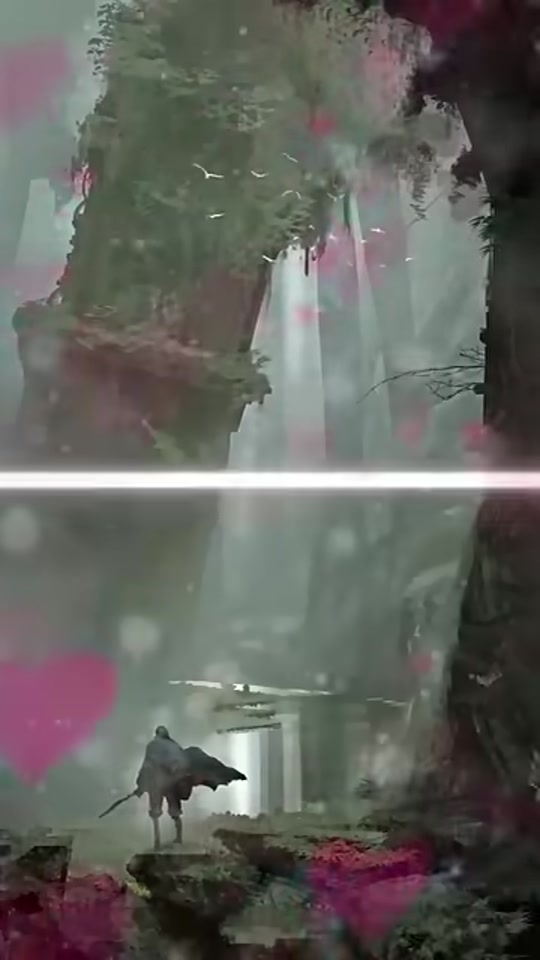
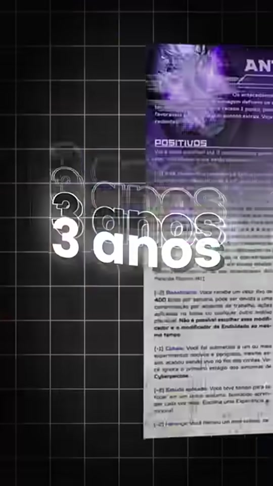
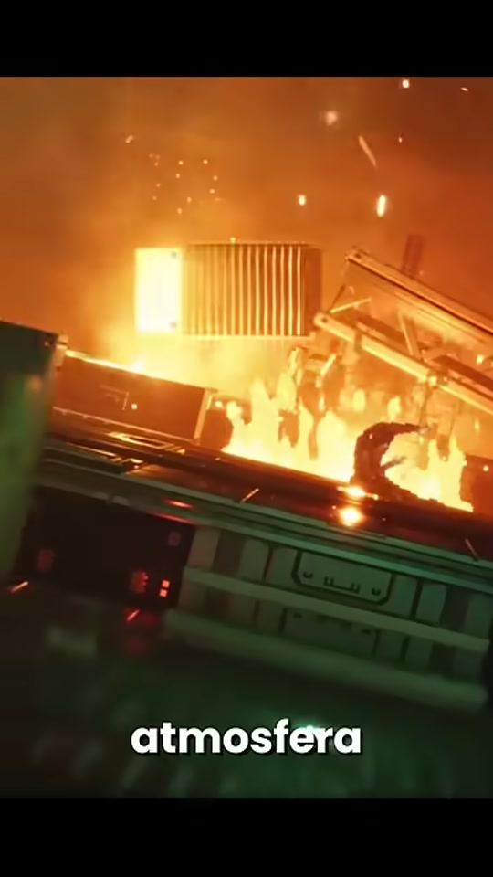
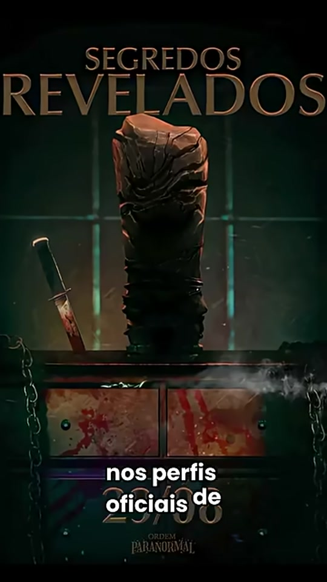
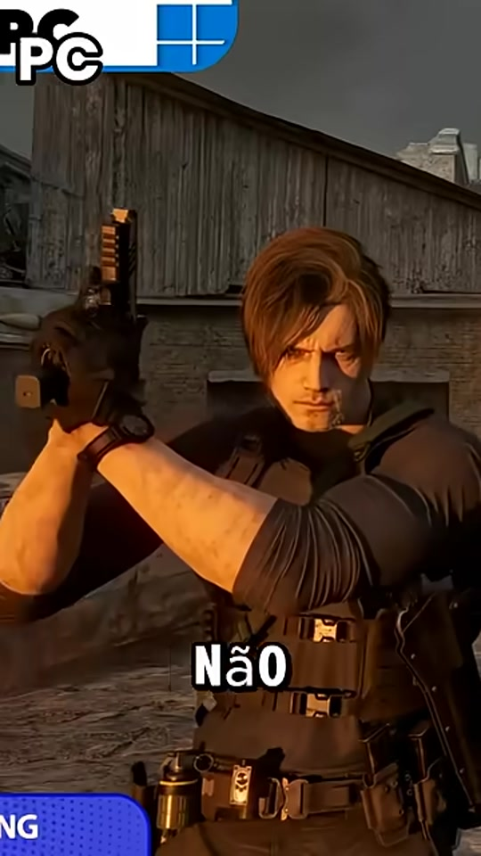

Ideias com ritmo.
Edição e composição visual para organizar um assunto em uma narrativa curta e acessível.
HARLEY AGUILAR · CONTEÚDO & VÍDEO
Transformo ideias em vídeos claros, dinâmicos e com identidade. Meu trabalho combina edição, narrativa visual e adaptação de conteúdo para redes sociais. Este projeto autoral reúne vídeos publicados e resultados que mostram a resposta do público.
Métricas públicas consultadas em 06/10/2026. Contagens abreviadas pelas plataformas são aproximadas.
COMPETÊNCIAS / EQUIPES CRIATIVAS
Edição e composição visual para organizar um assunto em uma narrativa curta e acessível.
Síntese, hierarquia e uma linguagem visual que considera o público e o formato de cada conteúdo.
Um acervo publicado em TikTok, YouTube Shorts e Instagram, com acesso direto aos trabalhos originais.
Cinco exemplos recentes de edição e comunicação em vídeo curto, apresentados pelo formato de conteúdo.

EDIÇÃO SELECIONADA / DÊ O PLAY01 / EDIÇÃO RECENTE
Síntese de recomendações em um vídeo curto.

EDIÇÃO SELECIONADA / DÊ O PLAY02 / EDIÇÃO RECENTE
Apresentação de um conceito autoral em formato vertical.

EDIÇÃO SELECIONADA / DÊ O PLAY03 / EDIÇÃO RECENTE
Seleção de um tema e construção de uma pauta para vídeo.

EDIÇÃO SELECIONADA / DÊ O PLAY04 / EDIÇÃO RECENTE
Conteúdo orientado a uma comunidade e seus interesses.

EDIÇÃO SELECIONADA / DÊ O PLAY05 / EDIÇÃO RECENTE
Comparação de perspectivas sobre um mesmo assunto.
Você também pode assistir a cada vídeo diretamente no YouTube, TikTok ou Instagram.
DESEMPENHO / PUBLICAÇÕES EM DESTAQUE
Nove publicações selecionadas no TikTok e no YouTube ultrapassaram 10 mil visualizações cada. Um conjunto de bons resultados em diferentes vídeos e plataformas.
Seis publicações do YouTube acima; três destaques do TikTok abaixo. Seleção de resultados, não a média de todos os vídeos. Contadores públicos aproximados consultados em 06/10/2026; views não representam pessoas únicas.
CONTEÚDO / RESULTADOS
TIKTOK
374,5 milvisualizações no vídeo
TIKTOK
117,4 milvisualizações no vídeo
TIKTOK
68 milvisualizações no vídeo
EM DESTAQUE / MAPAS DE RPG
Um assunto prático condensado em 23 segundos de vídeo. Favoritos e compartilhamentos mostram como o público respondeu a um formato informativo.
Assistir ao case no TikTok ↗Explore o trabalho completo e acompanhe os próximos vídeos.
01 / TIKTOK
3.730 seguidores
126,6 mil curtidas no perfil
02 / YOUTUBE
1,37 mil inscritos · 57 vídeos
422.538 visualizações acumuladas
03 / INSTAGRAM
57 publicações
Conteúdo autoral e vídeos curtos
Fontes: perfis públicos e vídeos vinculados · Consulta: 06/10/2026 · Os números podem mudar. Visualizações e seguidores são apresentados por plataforma e não representam público único.